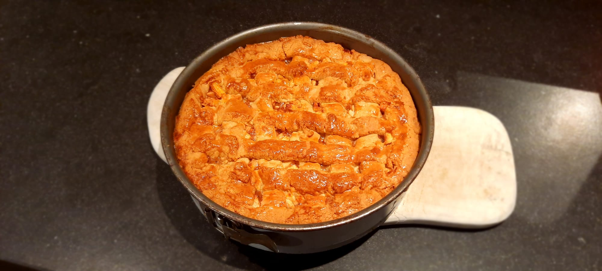
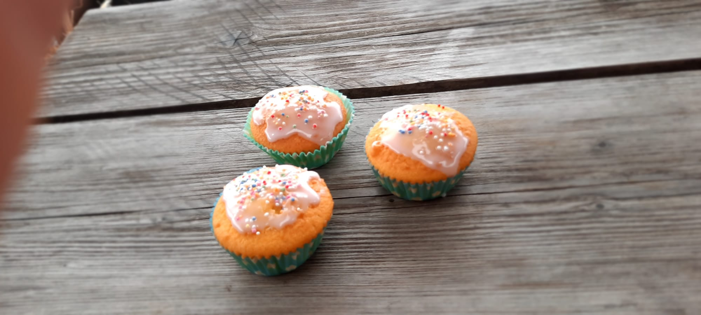
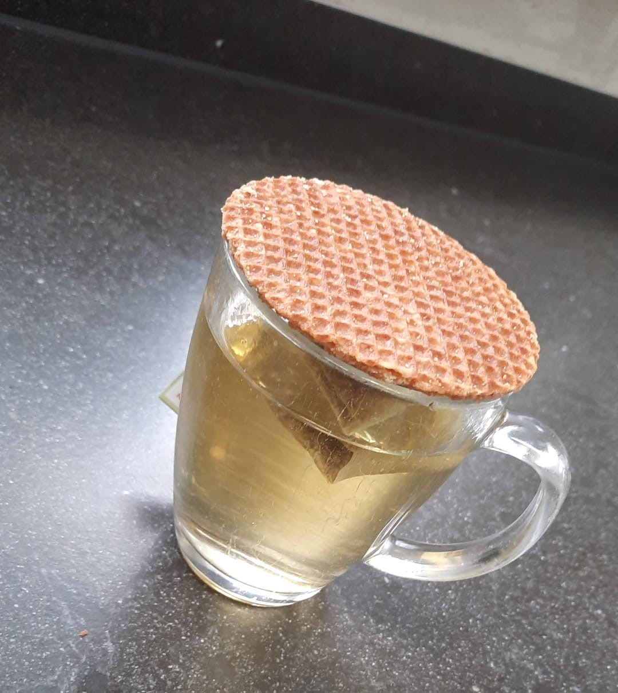

Weetjes!
- Wist je dat?
- De grootste cupcake op aarde maarliefst 1176 kilo woog?
- Wist je dat?
- Je in plaats van een koekjesvorm je ook een glas kan gebruiken?
- Wist je dat?
- Je 1 Amerikaanse cup gelijk staat aan 250 ml? Zo kun je ook recepten volgen uit Amerika!
- Wist je dat?
- Het zeven van meel en bloem voor meer luchtigheid zorgt in het gerecht? Als je dus van luchtige baksels houdt zou je hier gebruik van kunnen maken!
- Wist je dat?
- Gelukskoekjes oorspronkelijk uit Californië komen, en dus helemaal niet uit China?
- Wist je dat?
- Stroopwafels in Australië Coffee toppers worden genoemd? Dit komt omdat ze de stroopwafels laten opwarmen door ze bovenop hun koffie te leggen.
- Wist je dat?
- Wanneer je een warm kopje over een blok koude roomboter legt, dat deze sneller zacht wordt? Hierdoor is het beter te mixen.


